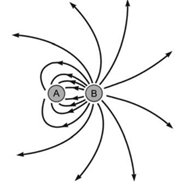

a) Uma massa, ao ser abandonada numa região do espaço onde há um campo gravitacional, passa a se movimentar no sentido do campo gravitacional.
b) Uma carga elétrica, ao ser abandonada numa região do espaço onde há um campo elétrico, passa a se movimentar em sentido contrário ao campo elétrico.
c) Dois corpos, a temperaturas diferentes, são colocados em contato e isolados da vizinhança. O calor flui do corpo de temperatura mais baixa para o de temperatura mais alta.
d) Uma carga elétrica, ao ser abandonada numa região do espaço onde há um campo elétrico, passa a se movimentar no sentido do campo elétrico.
a) o vetor campo elétrico em P dependerá do sinal de q.
b) o módulo do vetor campo elétrico em P será tanto maior quanto maior for a carga q.
c) o vetor campo elétrico será constante, qualquer que seja o valor de q.
d) a força elétrica em P será constante, qualquer que seja o valor de q.
e) o vetor campo elétrico em P é independente da carga de prova q.
I. Uma carga elétrica não sofre ação da força elétrica se o campo nesse local for nulo.
II. Pode existir campo elétrico sem que aí exista força elétrica.
III. Sempre que houver uma carga elétrica, esta sofrerá ação da força elétrica.
Use C (certo) ou E (errado).
|
a) CCC. b) CEE. |
c) ECE. d) CCE. |
e) EEE. |

Com base na análise da figura, responda aos itens a seguir.
a) Quais são os sinais das cargas A e B? Justifique.
b) Crie uma relação entre os módulos das cargas A e B. Justifique.
c) Seria possível às linhas de campo elétrico se cruzarem? Justifique.
a) ambas as esferas é igual.
b) uma esfera é 1/2 do campo gerado pela outra esfera.
c) uma esfera é 1/3 do campo gerado pela outra esfera.
d) uma esfera é 1/4 do campo gerado pela outra esfera.
e) ambas as esferas é igual a zero.
|
a) 2,7 . 103. b) 8,1 . 103. |
c) 2,7 . 106. d) 8,1 . 106. |
e) 2,7 . 109. |
"[…] A teoria precipitativa é capaz de explicar convenientemente os aspectos básicos da eletrificação das nuvens, por meio de dois processos […]. No primeiro deles, a existência do campo elétrico atmosférico dirigido para baixo […]. Os relâmpagos são descargas de curta duração, com correntes elétricas intensas, que se propagam por distâncias da ordem de quilômetros […]”.
(FERNANDES, W. A.; PINTO Jr. O; PINTO, I. R. C. A. Eletricidade e poluição no ar. Ciência Hoje. v. 42, n. 252. set. 2008. p. 18.)
Revistas de divulgação científica ajudam a população, de um modo geral, a se aproximar dos conhecimentos da Física. No entanto, muitas vezes alguns conceitos básicos precisam ser compreendidos para o entendimento das informações. Nesse texto, estão explicitados dois importantes conceitos elementares para a compreensão das informações dadas: o de campo elétrico e o de corrente elétrica. Assinale a alternativa que corretamente conceitua campo elétrico.
a) O campo elétrico é uma grandeza vetorial definida como a razão entre a força elétrica e a carga elétrica.
b) As linhas de força do campo elétrico convergem para a carga positiva e divergem da carga negativa.
c) O campo elétrico é uma grandeza escalar definida como a razão entre a força elétrica e a carga elétrica.
d) A intensidade do campo elétrico no interior de qualquer superfície condutora fechada depende da geometria desta superfície.
e) O sentido do campo elétrico independe do sinal da carga Q, geradora do campo.
I. Se o comprimento de onda de uma radiação incidente na gaiola for muito menor do que as aberturas da malha metálica, ela não conseguirá o efeito de blindagem.
II. Se o formato da gaiola for perfeitamente esférico, o campo elétrico terá o seu valor máximo no ponto central da gaiola.
III. Um celular totalmente envolto em um pedaço de papel alumínio não receberá chamadas, uma vez que está blindado das ondas eletromagnéticas que o atingem.
IV. As cargas elétricas em uma Gaiola de Faraday se acumulam em sua superfície interna.
Assinale a alternativa que apresenta apenas afirmativas corretas.
|
a) I e II. b) I e III. |
c) II e III. d) III e IV. |
Ao longo desse dia, uma delas recebeu ligações telefônicas, enquanto os amigos da outra tentavam ligar e recebiam a mensagem de que o celular estava fora da área de cobertura ou desligado.
Para explicar essa situação, um físico deveria afirmar que o material da caixa, cujo telefone celular não recebeu as ligações é de
a) madeira e o telefone não funcionava porque a madeira não é um bom condutor de eletricidade.
b) metal e o telefone não funcionava devido à blindagem eletrostática que o metal proporcionava.
c) metal e o telefone não funcionava porque o metal refletia todo tipo de radiação que nele incidia.
d) metal e o telefone não funcionava porque a área lateral da caixa de metal era maior.
e) madeira e o telefone não funcionava porque a espessura desta caixa era maior que a espessura da caixa de metal.
1 – Mauro lacrou um saco plástico com seu celular dentro. Pegou o telefone fixo e ligou para o celular. A ligação foi completada.
2 – Mauro repetiu o procedimento, fechando uma lata metálica com o celular dentro. A ligação não foi completada.
O fato de a ligação não ter sido completada na segunda experiência, justifica-se porque o interior de uma lata metálica fechada
a) permite a polarização das ondas eletromagnéticas diminuindo a sua intensidade.
b) fica isolado de qualquer campo magnético externo.
c) permite a interferência destrutiva das ondas eletromagnéticas.
d) fica isolado de qualquer campo elétrico
(Adaptado de: SABA, M. M. F. A Física das Tempestades e dos Raios. Física na Escola. v.2. n.1. 2001.)
Com base no texto e nos conhecimentos sobre eletrostática, atribua V (verdadeiro) ou F (falso) às afirmativas a seguir.
( ) A maioria das descargas elétricas atmosféricas ocorre quando o campo elétrico gerado pela diferença de cargas positivas e negativas é próximo de zero.
( ) A corrente elétrica gerada pelo raio produz um rápido aquecimento do ar, e sua inevitável expansão produz o som conhecido como trovão.
( ) A corrente elétrica gerada a partir de um raio pode ser armazenada e utilizada, posteriormente, para ligar o equivalente a 1000 lâmpadas de 100 watts.
( ) Para saber a distância aproximada em que um raio caiu, é preciso contar os segundos entre a observação do clarão e o som do trovão. Ao dividir o valor por 3, obtém-se a distância em quilômetros.
( ) A energia envolvida em um raio produz luz visível, som, raios X e ondas eletromagnéticas com frequência na faixa de AM.
Assinale a alternativa que contém, de cima para baixo, a sequência correta.
|
a) V, V, F, F, V. b) V, F, V, V, F. |
c) V, F, F, F, V. d) F, V, F, V, V. |
e) F, F, V, V, F. |